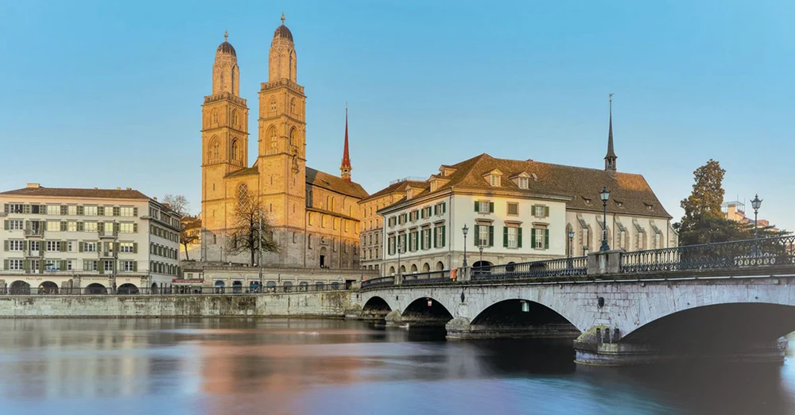
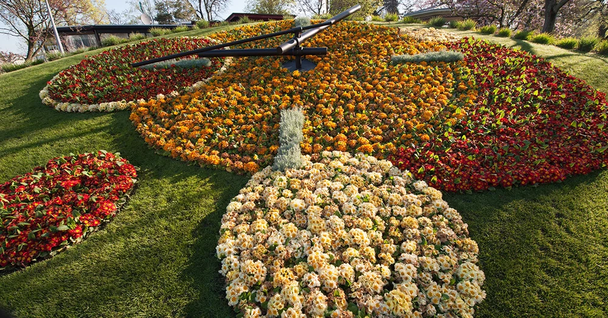

| DIA DIEM 1 | DIA DIEM 2 | DIA DIEM 3 | DIA DIEM 4 | DIA DIEM 5 |





| DU LICH SWITZERLAND | |||||||
|
|||||||
| 1. Nha Tho Grossmunster - Zurich | Nha tho Grossmunster von la mot tu vien co, duoc xay dung tren khu mo cua cac vi thanh bao tro thanh pho, Felix va Regula. Tuong truyen, Charlemagne la nguoi sang lap truong trung hoc dau tien tai day va ban co the thay buc tuong cua ong duoc dat tren dinh thap Karlsturm o phia Nam. Tu gian giua cua nha tho, ban di qua 187 bac thang dan len dai quan sat de ngam nhin khung canh tuyet dep cua khu pho co va ho Zurich, duoc bao quat qua sau o cua so lon. |  |
|||||
| 2. Nui Uetliberg - Zurich | Nam o phia Tay Nam cua Zurich, Uetliberg duoc xem la ngon nui cua rieng Zurich. O do cao 871m, ban co the ngam nhin quang canh tuyet dep cua thanh pho va ho nuoc ngoan muc. Ban co the de dang di len dinh Uetliberg bang chuyen xe lua chay tren nui. Dac biet, den Uetliberg vao ban dem de thuong thuc bua toi va ngam nhin thanh pho lap lanh phan chieu trong tuyet la mot trong nhung hoat dong yeu thich cua nguoi dan dia phuong o Zurich vao mua dong. | |
|||||
| 3. Ho Zurich Tho Mong Giua Long Thanh Pho | Ho Zurich khong chi la nguon cung cap nuoc ma con la trai tim cua thanh pho. Vao mua he, ban se thay hang ngan nguoi do ve day de tam nang, boi loi hoac thue thuyen buom. Mat nuoc trong xanh nhu ngoc bich, ket hop voi cac day nui phia xa, tao nen mot khung canh em dem ngay giua long do thi hien dai. | |
|||||
| 4. Dong Ho Hoa L'Horloge Fleurie - Geneva | Dong ho hoa (L'horloge fleurie) la mot bieu tuong kieu hanh cua Geneva, nam tai Jardin Anglais ngay canh ho Geneva. Duoc tao nen tu khoang 6.500 bong hoa tuoi ruc ro, chiec dong ho nay khong chi la mot tac pham nghe thuat sap dat ma con la minh chung cho su chinh xac tuyet doi cua nganh dong ho Thuy Si. Moi nam, thiet ke va loai hoa se duoc thay doi de mang lai dien mao moi la cho du khach theo tung mua. |  |
|||||
| 5. Cau Nha Nguyen Kapellbrucke - Lucerne | Cau Nha Nguyen Kapellbrucke la bieu tuong cua thanh pho Lucerne va la cay cau go co mai che co nhat chau Au. Duoc xay dung tu the ky 14, cay cau bac qua dong song Reuss tho mong, ket noi khu pho co voi khu pho moi. Diem dac biet nhat chinh la nhung buc hoa hinh tam giac nam duoi mai che, ke lai nhung cau chuyen lich su va ton giao cua Lucerne. Ngay canh cay cau la Thap Nuoc (Wasserturm) hinh bat giac dung vung giua dong song, tao nen mot khung canh dep nhu tranh ve. | |
|||||